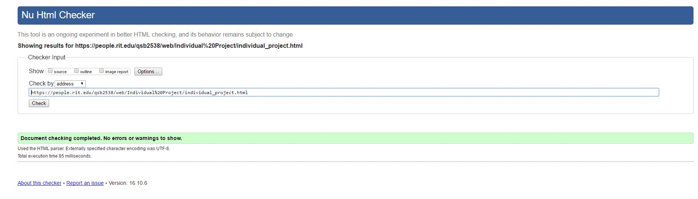

About
This website was designed to be a way to encourage more people to visit or contribute
to the natural sites of Central New York. The overall design of the site was to
show as much of a park as possible without boring the reader.
Content
My philosophy is that
reading about a park is nice, but it doesn’t make a strong enough impression to encourage someone
to visit. I decided to use high quality pictures to show off some of the incredible views
that these areas have to offer.
In doing so, I used many of my own pictures that I took while at these locations. However, due to
the quality and my general lack of photography skills I decided to use pictures others took.
The sources for these can be found at the bottom of this page.
Navigation
To make the navigation simple and easy to use, I decided to structure the site so that the user
could access any park that they were interested in via a dropdown menu located on the global navigation.
While the global navigation only has four items, I am confident that users will be able to navigate the site
quickly.
Organization
This site's organizational structure is fairly simple but effective. All parks are
assorted in a drop down menu while the about and preparation guide are located directly next to them.
As for individual webpage organization, I decided to write a short blurb on interesting features or
events that took place at the park or natural site. Following this, I placed three high quality pictures
to give the user a better understanding of what the park looked like. Next I added a small recommendation
on items to bring or warnings. Finally, I placed a map to show the location of the park or to show trails within the park.
Design
I decided to go for a clean design that focused the user's attention on the images of the parks. I felt that
a large image at the top of the webpage would improve interest in the parks. For the color scheme, I went with a forest
green to help convey the feeling of the outdoors.
HTML / CSS
For application of html and css in the site, I worked to keep structuring consistent throughout the site by using
server side includes for both the footer, header, navigation, and html boilerplate. With css I created a fairly responsive website
that will work from mobile devices to 4k monitors.

- letchworth1 = https://upload.wikimedia.org/wikipedia/commons/0/0f/Lower_Fall_%26_Stone_footbridge_at_Letchworth_State_Park,_New_York,_USA.jpg
- letchworth2 = https://s-media-cache-ak0.pinimg.com/originals/64/fb/03/64fb035b317209d205633d0851f82daa.jpg
- letchworth3 = http://tomstirrphotography.com/wp-content/uploads/2014/12/Letchworth-11.jpg
- letchworth8 = https://upload.wikimedia.org/wikipedia/commons/7/78/Lower_Falls_at_Letchworth_State_Park,_New_York,_USA.jpg
- letchworthmap = http://www.letchworthconcessionsandevents.com/LetchworthTrailMap-rs.jpg
- watkins4 = http://www.cnyhiking.com/WatkinsGlenStateParkPano001.jpg
- roy1 = http://ithacafingerlakes.com/wp-content/uploads/2013/06/FLLT-P63-1-18_0064-1024x681.jpg
- taughannock6 = http://static.thousandwonders.net/Taughannock.Falls.State.Park.original.13533.jpg
- taughannockMap = http://www.mobilemaplets.com/thumbnails/12017_thumbnail-1024.jpg
- treman1 = http://cnyhiking.com/LuciferFallsPanorama0021.jpg
- treman2 = https://upload.wikimedia.org/wikipedia/en/b/b0/Tremanstatepark.JPG
- treman3 = http://i0.wp.com/gallagherstravels.com/wp-content/uploads/2012/07/Lucifer-Falls-Treman-State-Park.jpg
- treman4 = http://ineedtogooutside.com/wp-content/uploads/2012/06/100_4114.jpg
- tremanMap = http://www.mobilemaplets.com/thumbnails/5197_thumbnail-1024.jpg
- keuka1 = http://static.panoramio.com/photos/original/55740678.jpg
- keuka2 = http://thechaironthelake.com/wp-content/uploads/2014/09/Keuka-Lake-Mary-StGeorge-Realtor.jpg
- keuka3 = https://agreenesadventures.files.wordpress.com/2013/07/img_0409.jpg
- keuka4 = http://3.bp.blogspot.com/-PB33NRK-8Ds/UbpmTMfas9I/AAAAAAAABp4/mml_PlNEwlM/s1600/IMG_2455.JPG
- keukaMap = https://fingerlakessum.files.wordpress.com/2012/03/picture-1.png
- ithaca5 = https://upload.wikimedia.org/wikipedia/commons/4/40/Cornell_University_arts_quad.JPG
- ithaca2 = https://upload.wikimedia.org/wikipedia/commons/2/2e/Cornell_University_from_McGraw_Tower.JPG
- ithaca3 = https://dragonflynaturephotography.files.wordpress.com/2015/01/img_3393.jpg
- ithaca4 = https://jpjimages.files.wordpress.com/2010/03/ithaca-falls.jpg
- yellowbarnMap = http://www.dec.ny.gov/lands/37407.html
- yellowbarn1 = http://ithacafingerlakes.com/wp-content/uploads/2013/01/tamarack-2-245.jpg
- buttermilk1 = https://upload.wikimedia.org/wikipedia/commons/e/e2/Buttermilk_Falls_3.JPG
- buttermilk2 = https://upload.wikimedia.org/wikipedia/en/6/68/Buttermilk_Falls,_Buttermilk_Falls_State_Park,_near_Ithaca,_NY_(15_05_2005).jpg
- buttermilk3 = https://s-media-cache-ak0.pinimg.com/originals/b6/b3/12/b6b3128c3a3392a4761defdb7261ee80.jpg
- buttermilk4 = http://cnyhiking.com/HPIM2855.JPG
- camping = http://www.backpackingculture.com/wp-content/uploads/2014/07/DSC03584.jpg